- Vindo do MacDiveQual arquivo exportar e como mudar sem perder nada.
- Baixar de um computadorShearwater e outros computadores Bluetooth, ou um cabo no Mac.
- Garmin DescentImporte arquivos .fit do relógio ou do Garmin Connect.
Algo não está funcionando? Veja Solução de problemas. O Thermocline é um logbook: ele mostra o que seu computador de mergulho registrou e nunca calcula descompressão.
Obter o app
O Thermocline é só para dispositivos Apple: iPhone, iPad, Mac e Apple Watch. Durante o beta, ele é instalado pelo app TestFlight da Apple.
| Tarefa | iPhone e iPad | Mac |
|---|---|---|
| Entrar no beta | Entre no beta: um link para iPhone, iPad, Mac e Apple Watch. Abra-o em cada dispositivo e instale pelo TestFlight. O app para Apple Watch vem com o app para iPhone. Todos os dispositivos compartilham o mesmo logbook pelo iCloud. | |
| Entrou no beta do iPhone antes de 18 de novembro de 2026 | Aquele app mudou de lugar. Veja como sair do antigo app para iPhone. | |
| Manter atualizado | Quando o TestFlight oferecer uma nova build, atualize todos os dispositivos que você usa. Uma build mais antiga para de enviar alterações até ser atualizada, e avisa. Nada se perde. | |
Primeira abertura e o tour
Na primeira abertura, o app pergunta seu nome, suas unidades e de onde vêm seus mergulhos. As unidades são armazenadas no sistema métrico; mudá-las só muda a exibição.
| Tarefa | iPhone e iPad | Mac |
|---|---|---|
| Ajustes | A aba Perfil | Thermocline → Ajustes |
| O tour | Perfil → Ajuda → Mostrar o tour | Ajuda → Fazer o Tour |
O tour passa por todas as telas usando um logbook de exemplo, não o seu.
As capturas de tela desta página mostram o logbook de exemplo do tour: os mergulhos e os pontos são inventados. Toque em uma para vê-la em tamanho real.

Traga seu logbook
O Thermocline lê o MacDive (a pasta dele, XML ou UDDF), um banco de dados do Shearwater Cloud, arquivos .fit da Garmin, UDDF de qualquer logbook e CSV. Você escolhe quais mergulhos adicionar, e tudo o que ele não consegue ler é listado, nunca descartado em silêncio.
| Tarefa | iPhone e iPad | Mac |
|---|---|---|
| Importar um arquivo | Perfil → Seus dados → Importar um arquivo de logbook e escolha o arquivo no iCloud Drive ou em Arquivos. | O comando de importação do menu Arquivo (⇧⌘I). |
| Arquivos .fit da Garmin | Selecione vários de uma vez. | Selecione vários, ou uma pasta inteira. |
| A pasta do MacDive, com fotos | Só no Mac. Traga as fotos depois com o app para Mac. | Arquivo → Importar do MacDive… e escolha a pasta do MacDive: mergulhos, fotos de mergulho e fotos de carteiras. Os arquivos do MacDive não são alterados. |
| Escolher os mergulhos | Desmarque os que não quiser e toque em Importar. | |
| Desfazer uma importação | O ponto de restauração Antes de uma importação, criado antes de qualquer importação de mais de um mergulho. | Desfazer Importação… no relatório de importação, ou o mesmo ponto de restauração. |
Quando a importação termina, um relatório mostra quantos mergulhos foram adicionados, quais itens não foram importados e por quê, e o que conferir. Mergulhos cujo arquivo não tinha gás aguardam em A confirmar.
Qual arquivo do MacDive usar
O MacDive pode dar o XML dele, o UDDF dele ou (no Mac) a pasta inteira. Eles não trazem as mesmas coisas:
| O que traz | MacDive XML | MacDive UDDF | Pasta do MacDive (Mac) |
|---|---|---|---|
| Mergulhos, pontos, duplas, gases | Sim | Sim | Sim |
| Tamanhos dos cilindros | Sim | Não: os tamanhos dele não são volumes hidráulicos, então ficam em branco | Sim |
| Perfis de profundidade | Todos os mergulhos | Todos os mergulhos | Todos, menos os mergulhos que o MacDive baixou no iPhone ou iPad, que ele armazena criptografados |
| NDL e ppO₂ do computador ao longo do mergulho | Sim | Não | Sim, exceto esses mergulhos criptografados |
| CNS do computador | Sim | Não | Sim |
| Equipamento, etiquetas e tipos de mergulho | Sim | Não | Sim |
| Fotos de mergulho e de carteiras | Não | Não | Sim |
| Tarefa | iPhone e iPad | Mac |
|---|---|---|
| Melhor caminho | Exporte seus mergulhos do MacDive como XML, salve o arquivo no iCloud Drive e importe-o. | Importe a pasta do MacDive e depois o XML por cima. O XML preenche os perfis, o NDL e o ppO₂ dos mergulhos criptografados. |
| Já importou o UDDF | Importe o XML também. Mergulhos que já estão no seu logbook são reconhecidos, não adicionados de novo, e só o que falta é preenchido, inclusive os tamanhos dos cilindros. Nada que você inseriu ou corrigiu é alterado. | |
Relógios Garmin Descent
Um Garmin Descent guarda um arquivo .fit por mergulho. Há duas formas de obtê-los:
- Do relógio: conecte-o ao Mac com o cabo dele e abra a pasta GARMIN → Activity. No Mac você pode importar a pasta GARMIN inteira; arquivos que não são mergulhos, como corridas e configurações, são ignorados.
- Do Garmin Connect: abra o mergulho e escolha Exportar original. Isso gera um .zip: descompacte primeiro e depois importe o arquivo .fit de dentro.
As posições vêm do GPS do relógio. Num mergulho de deriva, o relógio salva como início o lugar onde você subiu; a importação encontra onde você realmente entrou na água, e o mergulho é associado a esse ponto. Adicione às notas os outros naufrágios por onde você passou.

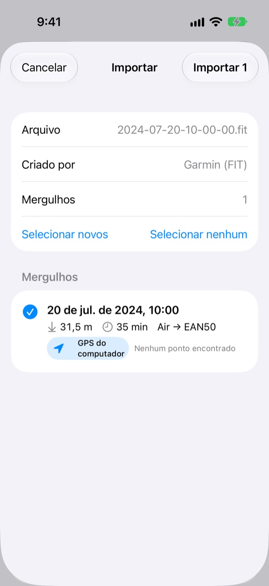
Baixar mergulhos do seu computador
Primeiro coloque o computador de mergulho no modo Bluetooth. Num Shearwater: Menu → Bluetooth. Ele fica nesse modo por cerca de dois minutos. Só são buscados os mergulhos mais novos que o seu último download.
| Tarefa | iPhone e iPad | Mac |
|---|---|---|
| Abrir | Logbook → Baixar Mergulhos | Arquivo → Baixar do Computador de Mergulho… (⇧⌘D) |
| Conectar | Bluetooth. Escolha seu computador em Próximos; na primeira vez, digite o PIN mostrado na tela dele. | Escolha Bluetooth ou Cabo USB. Para um cabo, escolha o modelo do seu computador e a porta, e siga Antes de começar. |
| Concluir | Desmarque os mergulhos que não quiser e toque em Manter. Mergulhos desmarcados ficam no computador e são oferecidos de novo na próxima vez. | Baixar. |
A pergunta do relógio. O primeiro download de cada computador pergunta Em que fuso está o relógio do computador? A maioria dos computadores registra a hora local sem fuso horário, então isso mantém os horários dos seus mergulhos certos quando você viaja. A resposta fica lembrada para aquele computador.
Depois de escolher os mergulhos, você pode passar por eles um a um para definir o ponto e os gases, ou tocar em Terminar depois: eles aguardam em A confirmar.
Apagou um mergulho e quer de volta? Ative Baixar todos os mergulhos do computador. Demora mais; mergulhos que já estão no seu logbook são ignorados.

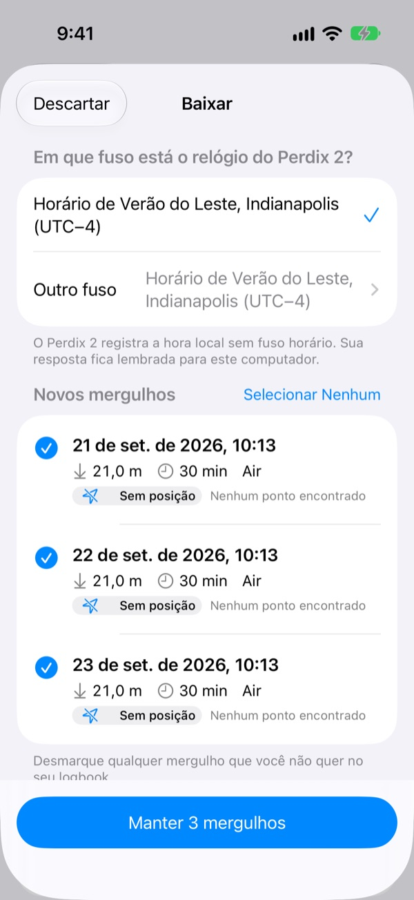
Shearwater Predator e Petrel 1
Eles usam um Bluetooth mais antigo (Bluetooth Classic) que iPhones e iPads não conseguem usar. No Mac, primeiro emparelhe o computador em Ajustes do Sistema → Bluetooth e depois escolha Cabo USB na janela de download: a porta dele pode aparecer na lista. Coloque o computador no modo de upload por Bluetooth e escolha Baixar. Isso ainda não foi testado num Predator ou Petrel 1 real, então, por favor, envie o log de download, funcionando ou não. No iPhone, importe os mergulhos deles do Shearwater Cloud ou de um arquivo UDDF.
Computadores compatíveis
O Thermocline baixa com a libdivecomputer, a biblioteca de código aberto que muitos logbooks compartilham. Ela conhece várias centenas de modelos da maioria dos fabricantes. Para ver o seu, abra a tela de download e escolha Computadores compatíveis; cada um diz se funciona no iPhone e no iPad ou se precisa do Mac.
| Conexão | Onde funciona | Testado até agora |
|---|---|---|
| Bluetooth LE | iPhone, iPad e Mac | Shearwater Perdix e Perdix 2. Outros modelos devem funcionar: conte para nós. |
| Cabo USB ou serial | Só no Mac | Feito, ainda não testado em hardware real. |
| Bluetooth Classic (Predator, Petrel 1 e outros modelos mais antigos) | Só no Mac, emparelhado como porta serial (como) | Ainda não testado. |
| Garmin Descent (arquivos .fit) | Importação no iPhone, iPad e Mac (como) | Mergulhos com Descent, incluindo mergulhos de deriva. |
Tem um computador que ainda não testamos? Ajude a testá-lo.
Confirmar ponto e gases
Mergulhos ainda sem ponto ou sem gases confirmados aguardam em A confirmar. Nada impede que sejam salvos; preencha quando quiser.
| Tarefa | iPhone e iPad | Mac |
|---|---|---|
| Encontrá-los | No topo de Logbook, em A confirmar. | Ir → A Confirmar (⌘2) |
| Confirmar | Abra um, depois Escolher um ponto e toque em Sim, estes gases estão certos (ou Corrigir Gás…). | O banner de cada mergulho oferece Confirmar Ponto e Gases…, Escolher Ponto… ou Confirmar Gases…. |
O Thermocline sugere o ponto a partir da posição do mergulho: primeiro seus próprios pontos, depois as listas integradas com mais de 76.000 pontos de mergulho e naufrágios, que funcionam offline.

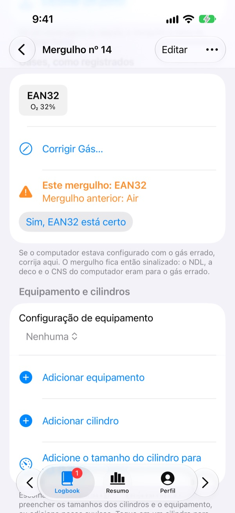
Ler um mergulho
| Tarefa | iPhone e iPad | Mac |
|---|---|---|
| Ler qualquer momento | Arraste ao longo do gráfico. | Aponte para o gráfico. |
| Registrar um mergulho à mão | Logbook → Registrar à Mão | ⌘N |
- Valores de segurança ficam numa faixa fixa no topo de cada mergulho, sempre no mesmo lugar.
- O perfil: chips abaixo do gráfico mostram ou ocultam Cilindro, ppO₂, NDL, SAC, Temp., CNS e Subida, como faixas Empilhado ou no modo Sobreposto. Só o que o mergulho registrou ganha um chip. O NDL é o do próprio computador e para durante a deco, quando a faixa vermelha mostra as paradas. Num iPhone estreito, os chips ficam numa linha e rolam para o lado. Experimente na página inicial.
- Rebreathers: de qualquer computador ou arquivo que os registre, a faixa de ppO₂ mostra o setpoint com o ppO₂ votado (e cada célula, quando registrada), e a leitura dá o setpoint naquele momento. Uma troca do diluente para qualquer outro gás é marcada como bailout.
- Consumo de gás: toque ou clique em Como? ao lado do número do SAC para ver cada dado: o cilindro, o volume hidráulico, as pressões, a temperatura e a correção de gás real.
- Edição: edite qualquer mergulho. Uma correção mantém a leitura original do computador.
- Lastro: o primeiro toque em + define Sem lastro, para um mergulho sem lastro nenhum. Toque em − a partir daí para limpar.
- Links nas notas: links da web nas notas de um mergulho podem ser tocados ou clicados. Quando terminar de digitar, toque em OK acima do teclado: os links aparecem, e um link do YouTube ou do Vimeo ganha um botão Adicionar … aos links de vídeo abaixo das notas. Para digitar nas notas de novo, escolha Editar notas.

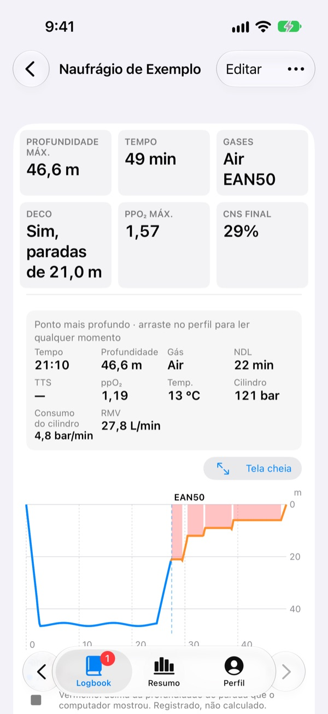

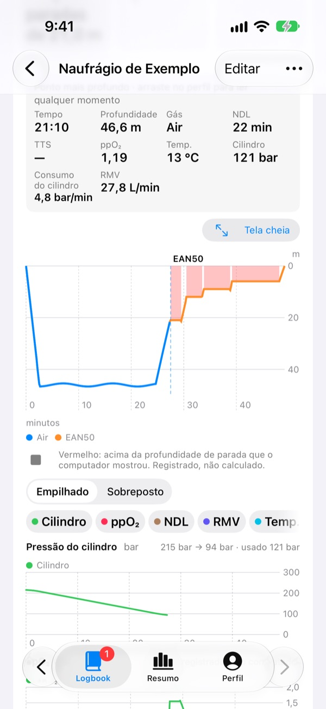


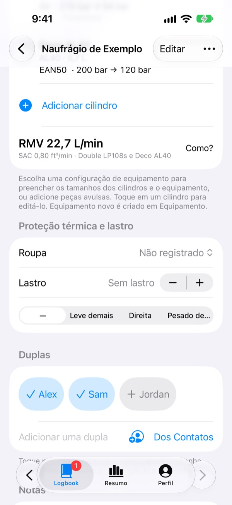

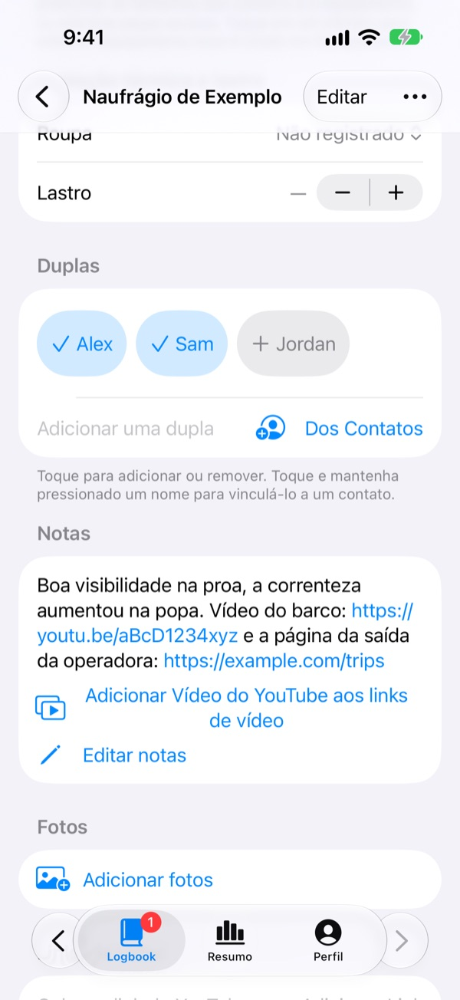

Pontos, posições e o Apple Watch
| Tarefa | iPhone e iPad | Mac |
|---|---|---|
| Adicionar um ponto | Perfil → Pontos e depois o botão de adicionar: Encontrar ou nomear um ponto ou Marcar local aqui (GPS). | Ir → Pontos (⌘4) e depois Adicionar Ponto… |
| Ver todos os pontos das listas | Perfil → Pontos → Mapa e depois o botão do globo, ou faça o gesto de pinça até reduzir o zoom ao máximo. Naufrágios em laranja, recifes e pontos de mergulho em azul, seus próprios pontos como bandeiras vermelhas. | Pontos e depois Mostrar Globo na barra de ferramentas, ou reduza o zoom até o fim. |
| Encontrar uma posição | Um ponto sem posição oferece Encontrar posição: confira a sugestão no mapa, digite as coordenadas ou solte um alfinete. | Encontrar Posições… passa por todos os pontos sem posição, um de cada vez. |
Apple Watch: marque um local na superfície e ele aguarda no seu iPhone em A confirmar. Veja Apple Watch.
As posições dos pontos são para registro, não para navegação.

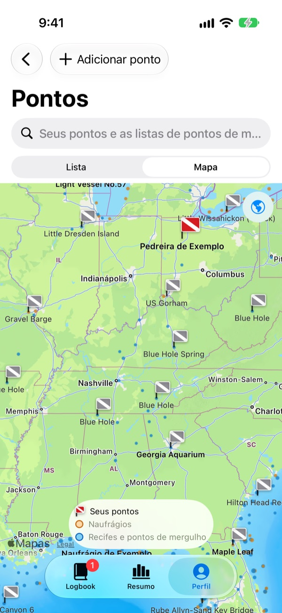
Apple Watch
O app para Watch faz uma coisa só: marca onde você está na superfície, para que seja fácil registrar o ponto de um mergulho. Ele não registra mergulhos; esses vêm do seu computador de mergulho. Ele precisa do watchOS 11 ou posterior e de um iPhone com o Thermocline.
| Tarefa | Apple Watch | iPhone |
|---|---|---|
| Instalar | Ele vem com o app para iPhone. Se não estiver no relógio, abra o app Watch no seu iPhone, encontre o Thermocline em Apps Disponíveis e toque em Instalar. Na primeira vez, permita a localização para o Thermocline no relógio. | |
| Marcar um local | Na superfície, sobre o ponto, abra o Thermocline. Espere por Boa posição e toque em Marcar local. O relógio dá um toque no seu pulso quando o local é salvo. | O local chega sozinho. Se o iPhone estiver fora de alcance, ele é enviado quando os dois estiverem juntos de novo. |
| Dar um nome | Opcional. Toque em Adicionar um nome depois de marcar, ou mais tarde em Locais marcados, e fale, escreva à mão ou digite, por exemplo "proa do naufrágio". Ele salva quando você termina. | O nome é oferecido como nome do novo ponto. Você pode usá-lo ou escolher outro ponto. |
| Confirmar | Nada a fazer no relógio. | Logbook → A confirmar. O iPhone pesquisa o local quando está online, sugere o ponto conhecido mais próximo e mostra o mergulho a que ele mais provavelmente pertence. Confirme ou descarte. |
| Conferir se foi enviado | Locais marcados mostra cada um com Enviado ao iPhone ou Aguardando envio ao iPhone, e um mapa. Um local sai do relógio assim que é confirmado ou descartado no iPhone. | Depois de confirmado, o ponto sincroniza com seus outros dispositivos como qualquer outro. |

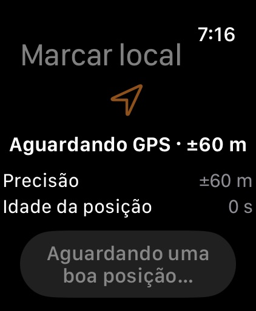


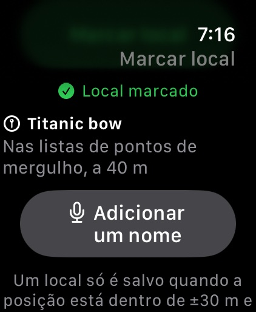

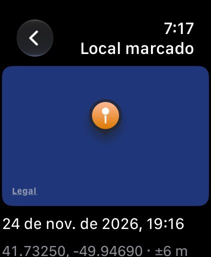
O relógio só salva um local a partir de uma posição com precisão de ±30 m e com menos de 30 segundos, e ignora uma posição antiga em cache. Marque na superfície, não embaixo d'água.
As posições dos pontos são para registro, não para navegação.
Equipamento e cilindros
| Tarefa | iPhone e iPad | Mac |
|---|---|---|
| Abrir Equipamento | Perfil → Equipamento | Ir → Equipamento |
- Num cilindro, Modelo abre o catálogo de cilindros: pesquise por fabricante ou modelo (por exemplo "PST LP104") para preencher os tamanhos publicados, ou digite seus próprios números.
- Marque Duplo (bi-cilindro com manifold) para um bi-cilindro.
- Um cilindro de aço com um + gravado: ative Marcação plus enquanto o último teste hidrostático tiver mantido o +. Ele aparece como, por exemplo, 2400+. Essa opção aparece quando os tamanhos dos cilindros são mostrados em pés cúbicos.
- Os cilindros de cada mergulho ficam na seção de gás do mergulho (Adicionar cilindro, Configuração de equipamento).
Mesclar e juntar mergulhos
- Mesclar é para um mergulho registrado por dois computadores. As duas gravações são mantidas e você pode alternar entre elas no gráfico.
- Juntar é para um mergulho dividido em dois por uma breve subida à superfície.
- O Thermocline nunca faz nenhuma das duas coisas por conta própria. Quando identifica um provável par, um banner no topo do logbook oferece Revisar.
| Tarefa | iPhone e iPad | Mac |
|---|---|---|
| Fazer você mesmo | Toque em Selecionar, escolha dois mergulhos e depois Mesclar ou Juntar. | Selecione dois mergulhos e clique com o botão direito: Mesclar Estes Mergulhos… ou Juntar Estes Mergulhos… |
| Mudou de ideia | Desfazer logo em seguida, ou Separar estes mergulhos no mergulho a qualquer momento. | |
Fotos e links de vídeo
- Adicionar fotos num mergulho copia as fotos da sua biblioteca para o logbook.
- Para economizar espaço no iCloud, ative Sincronização → Economizar espaço do iCloud nas fotos de mergulho em todos os dispositivos. As fotos passam a ser vinculadas às Fotos do iCloud em vez de copiadas, e vídeos da sua biblioteca podem ser adicionados. O Thermocline só pede acesso ao Fotos quando você ativa isso.
- Links de vídeo: cole um link do YouTube ou do Vimeo abaixo das fotos de um mergulho. Só o link é guardado. Um link que já está nas notas pode ser adicionado a partir delas (veja Ler um mergulho).
- O mesmo vídeo em vários mergulhos: selecione os mergulhos (no iPhone, toque em Selecionar primeiro), escolha Editar … mergulhos… e adicione o link em Links de vídeo. Ele é adicionado a todos os mergulhos selecionados, e os links que eles já têm são mantidos.
Resumo e consumo de gás
A aba Resumo (Resumo na barra lateral do Mac) faz as contas do seu logbook: mergulhos por ano e por mês, profundidades, gases, recordes, onde você mergulha e o ponto e a dupla mais frequentes. Escolha um período no topo, por exemplo um ano, e toque em qualquer número ou barra para ver os mergulhos por trás dele.
- Respiração mostra seu SAC e RMV em todos os mergulhos do período que têm tamanho de cilindro e pressões inicial e final, ponderados por tempo e profundidade. Toque para ver quais mergulhos foram contados.
- Alguns mergulhos importados não têm tamanho de cilindro, então Respiração pode ficar vazia no começo (veja Qual arquivo do MacDive usar). Defina os cilindros nos seus mergulhos, em Equipamento ou em cada mergulho, e ele se preenche.

Sincronizar com o iCloud
| Tarefa | iPhone e iPad | Mac |
|---|---|---|
| Ativar a sincronização | Perfil → Sincronização | Thermocline → Ajustes → Sincronização |
A partir daí, todos os dispositivos com sessão iniciada na mesma Conta Apple compartilham um logbook, armazenado no seu próprio iCloud privado. Alterações feitas offline aguardam no dispositivo e são enviadas quando ele volta a ficar online.
A seção Sincronização mostra o estado, o que estiver Aguardando envio e se este dispositivo e os outros estão iguais. Sincronizar agora verifica na hora.

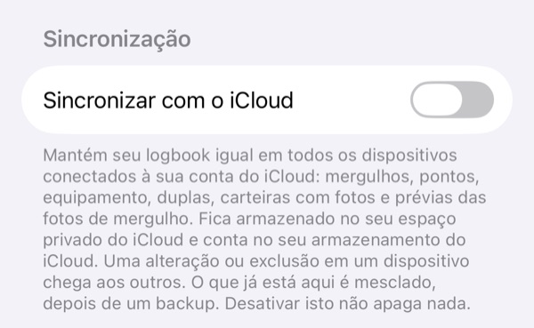
Exportação, pontos de restauração e apagar
| Tarefa | iPhone e iPad | Mac |
|---|---|---|
| Exportar | Perfil → Seus dados | O menu Arquivo |
| Pontos de restauração | Perfil → Seus dados → Pontos de restauração | Ajustes → Seus dados → Pontos de Restauração |
- Exportação: o UDDF é a exportação completa e a sua saída para qualquer logbook. Também disponíveis: uma planilha (CSV), MacDive XML, marcadores para topografia de caverna (CSV) e um resumo de experiência (texto) para pré-requisitos de cursos.
- Pontos de restauração: um é salvo antes de ativar a sincronização, antes de uma importação grande, de uma mesclagem, de uma junção, de apagar tudo e antes de qualquer exclusão. Restaurar salva primeiro seu logbook atual como ponto de restauração, para que você possa desfazer.
- Apagar: Apagar logbook… oferece exportar antes. Com a sincronização ativada, seus outros dispositivos acompanham.

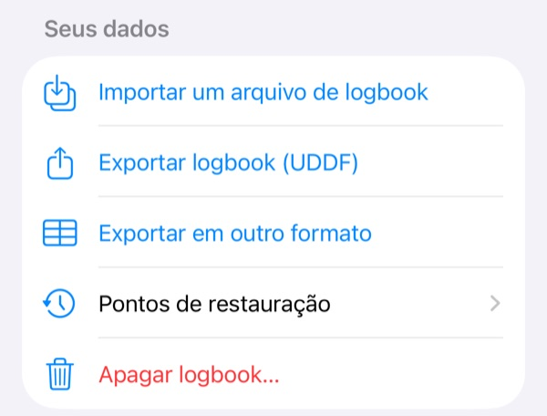
Ainda com problemas?
Veja Solução de problemas, ou envie feedback pelo TestFlight ou para brian@616labs.net.